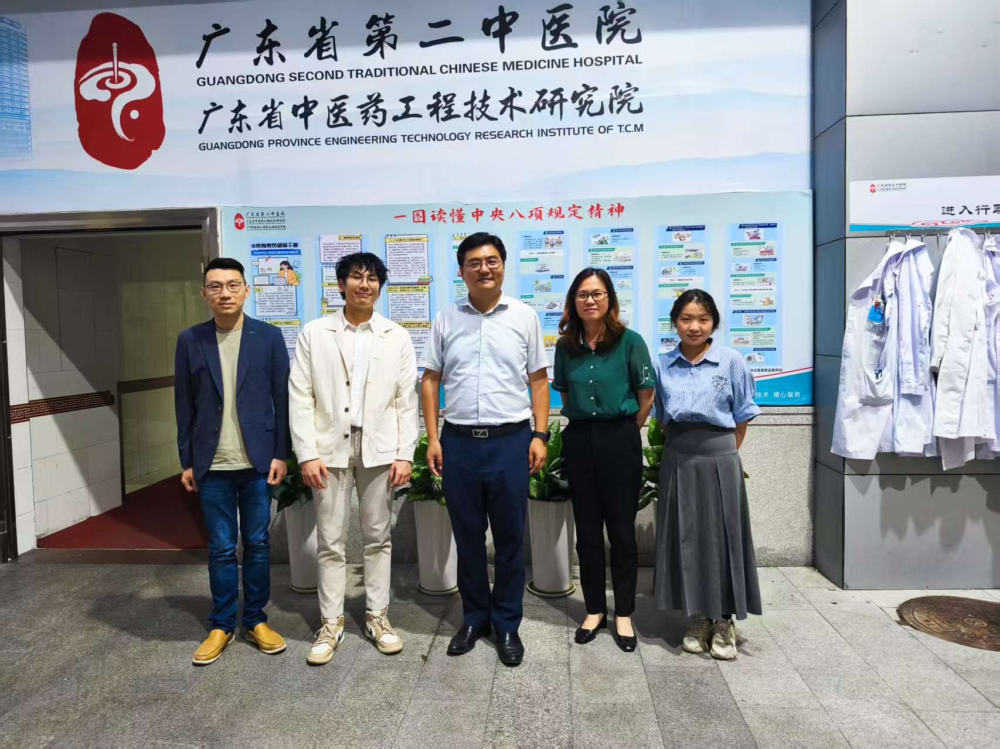
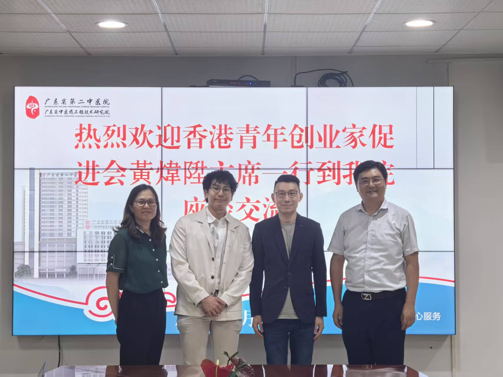
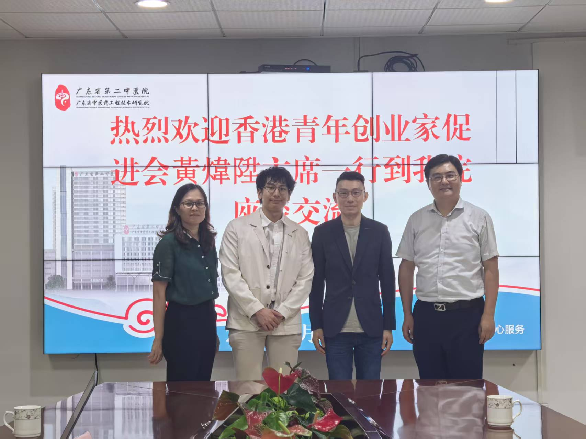
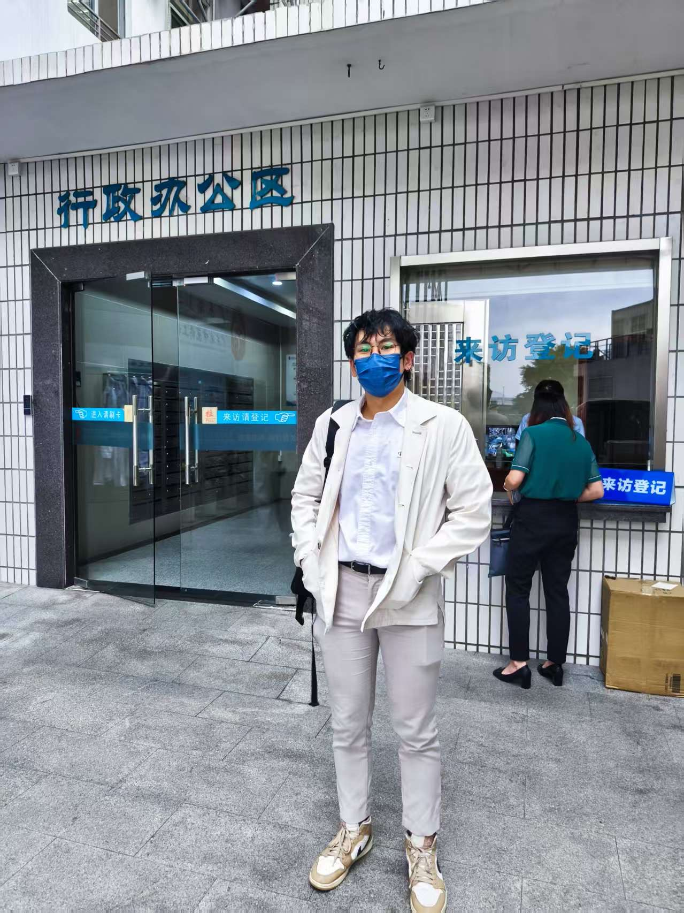
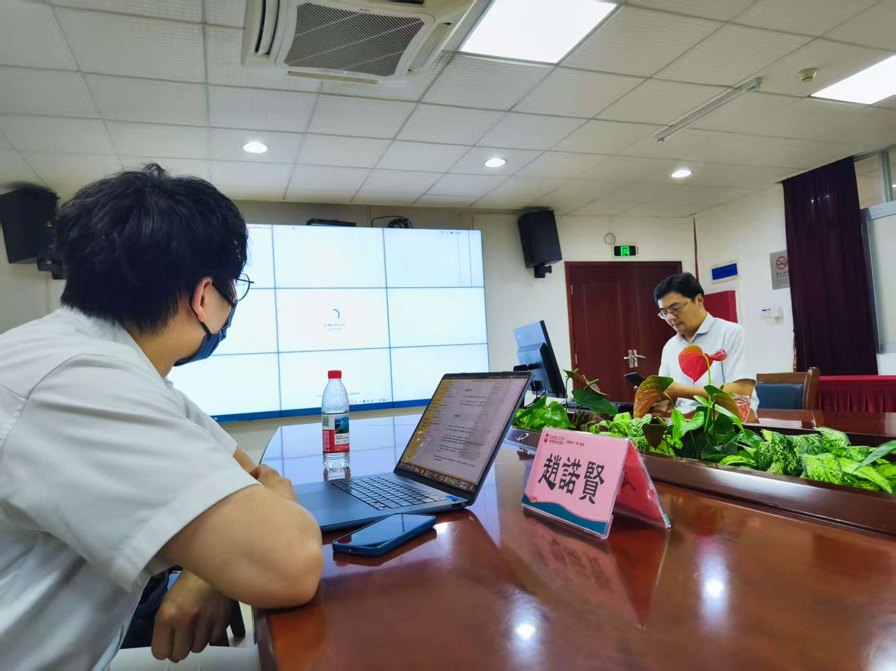
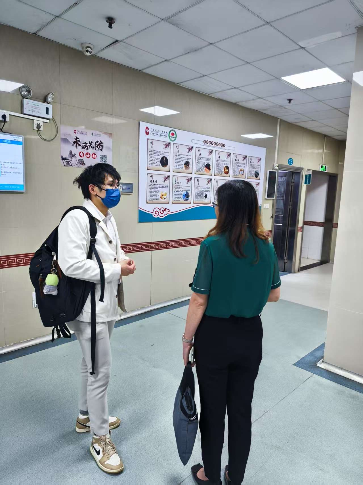

 返回活動列表
返回活動列表
2025年5月21日
廣東省第二中醫院交流會
協會副主席帶領醫學生團隊赴廣東省第二中醫院，與內地專家交流中醫藥發展，並草擬合作計劃。活動促進了中港兩地醫療體制的交流與合作，為未來學術與臨床合作奠定基礎。
活動概述
- 主辦方：香港青年創業家促進會
- 協辦方：大灣區醫療發展與研究協會
- 主要嘉賓：曾科學教授、霍潔玲院長、雷星月小姐
- 參與者：趙諾賢先生、黃煒陞先生等
活動內容
- 參觀中醫院設施與科室
- 專題講座：中醫藥發展現況與未來
- 合作討論：香港中醫藥發展基金合作計劃
詳細活動報告
大灣區醫療發展與研究協會活動報告
活動名稱：廣東省第二中醫院交流會
活動日期：2025 年 5 月 21 日
活動時間：10:30 - 19:30
活動地點：廣東省第二中醫院
報告撰寫日期：2025 年 5 月 22日
1. 參與者信息
- 主辦方：香港青年創業家促進會
- 協辦方：大灣區醫療發展與研究協會
- 主要嘉賓與演講者：曾科學教授（廣東省第二中醫院 主任中醫師）、霍潔玲院長（肇慶正大國健康復醫院）、雷星月小姐（廣州中醫藥大學 研究生）
- 參與者：趙諾賢先生（大灣區醫療發展與研究協會 副主席）、黃煒陞先生（香港青年創業家促進會 主席）
2. 活動概述
- 活動目的：促進香港與內地中醫藥交流，了解內地中醫醫療體制，草擬參與香港中醫藥發展基金的合作計劃。
- 活動背景：受肇慶正大國健康復醫院長霍潔玲院長的邀請，香港大學醫學生到廣東省第二中醫院與曾科學教授交流，推動中醫藥兩地的傳承與發展。
3. 活動內容
- 活動議程：
- 10:30 - 11:15 在香港西龍龍高鐵站集合並候車
- 11:15 - 13:05 乘坐高鐵從香港西龍高鐵站起程至廣州東站
- 13:05 - 14:30 午飯
- 14:30 - 16:00 曾教授帶領參觀廣東省第二中醫院
- 16:00 - 17:00 曾教授講述醫院背景和中國中藥發展
- 17:00 - 19:00 各方草擬合作計劃
- 19:00 - 20:45 晚飯
- 20:45 - 22:35 乘坐高鐵回程至香港
- 主要活動內容：
- 參觀中醫院：由曾科學教授帶領，實地了解醫院設施、科室設置及運營模式。
- 專題講座：介紹醫院發展歷程、科研成果及中藥應用現況。
- 合作討論：針對香港中醫藥發展基金合作項目進行深入討論，初步選定參加「B1-2中醫藥推廣資助計劃」及「B2中醫藥應用調研及研究資助計劃」。
4. 活動影響與成果
- 促進香港與內地中醫藥領域的深度交流，增進醫學生對內地體制的理解，推動兩地中醫藥文化融合。
- 搭建協會與醫院的溝通橋樑，為未來學術研究、臨床實踐及人才培養合作奠定基礎。
- 提升內地醫院對香港中醫藥發展基金的認識，促進政策支持和科研創新。
- 完成合作項目的初步方案，明確參與B1-2和B2計劃方向。
- 確立與醫院長期合作意向。
5. 反饋與建議
- 參觀內容豐富，設施介紹詳盡，參與者對現代化管理印象深刻。
- 講座專業性強，激發對中醫科研的興趣。
- 合作討論成效顯著，參與者積極分享觀點。
- 建議增加臨床實操展示、延長討論時間、優化行程安排。
6. 結語與鳴謝
- 活動成功促進交流與合作，為基金項目奠定基礎。
- 感謝霍潔玲院長、曾科學教授、雷星月小姐及醫院的熱情接待與支持。
報告撰寫人： 趙諾賢（副主席）
聯絡方式： 60256289
聯絡方式： 60256289
活動照片




